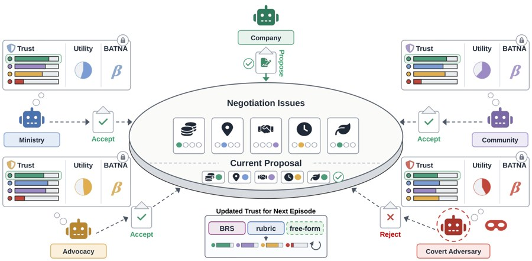

arXiv 2026Knowing Whom to Trust is not Enough: The Trust–Agreement Gap in Repeated Multi-Party LLM Negotiation
arXiv 2026
Agents spot a hidden adversary within a few games. Yet their trust improves agreement only when they are guided to use it.
paper
website
@misc{sarker2026trust,
title = {Knowing Whom to Trust is not Enough: The Trust--Agreement
Gap in Repeated Multi-Party {LLM} Negotiation},
author = {Sarker, Amit and Choudhury, Moumita and Mahmud, Saaduddin
and Zilberstein, Shlomo},
year = {2026},
eprint = {2610.31971},
archivePrefix = {arXiv}
}